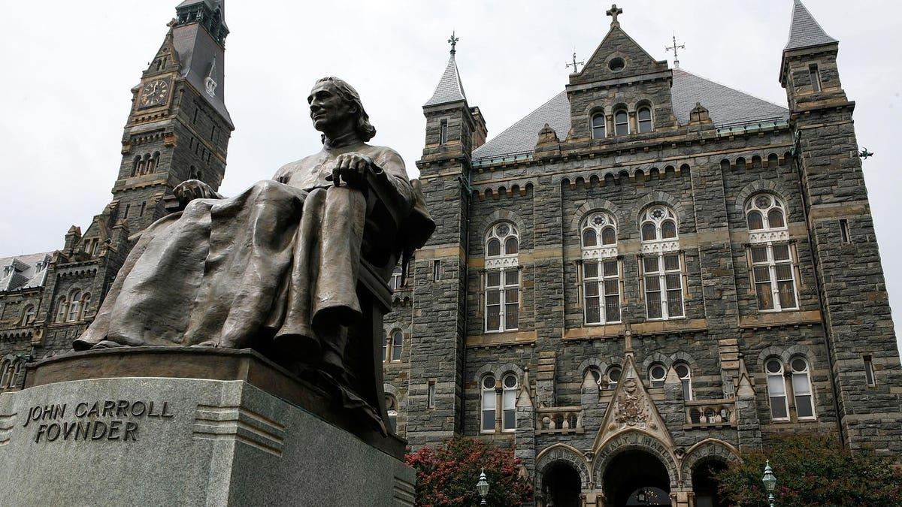

Visa Refusals And Immigration Policies Lead To Fewer StudentsConsular officers denying visas and uncompetitive immigration policies have contributed to a drop in international students attending U.S. universities. Analysts say the decline harms U.S. economic efforts to attract talent and weakens America’s soft power focused on influencing future leaders in Africa and elsewhere. Researchers recommend changing U.S. policies to reverse the trend and increase the admission of international students. Uncompetitive U.S. Immigration Policies At U.S. universities, the number of international students declined by 15% or 164,727 between the 2016/17 and 2020/21 academic years. (Source: Institute of International Education.) During the same period, at Canadian colleges and universities, the number of international students increased by 46% or 117,039. (Source: Statistics Canada.) For 2021/22, international students in the United States rose by 4%. (Statistics for Canada were not yet available.) Indian students have fueled the rise in international students in Canada. Indian international students at Canadian colleges and universities increased by 180% between the 2016/17 and 2020/21 academic years, according to a National Foundation for American Policy analysis of Canadian government data. During the same period, at U.S. universities, the number of international students from India decreased by 10%. (Between 2020/21 and 2021/22, Indian students rose by 19% at U.S. universities, according to the Institute of International Education.) Far more liberalized immigration policies in Canada than in the United States appear to be a primary reason Canada has become more attractive to international students, particularly Indian students. An international student in Canada can expect a smooth transition from university to temporary work status to permanent residence. Not so in the United States. Most H-1B registrations are rejected in the United States due to the low annual limit, and employment-based green cards for Indians can take decades in the United States due to the per-country limit and the low annual number of employment-based immigrant visas. In 2022, an exemption from yearly green card limits for foreign nationals with a Ph.D. in STEM (science, technology, engineering and math) fields and those with a master’s degree “in a critical industry” passed the House but was blocked in the Senate and not included in the CHIPS and Science Act. “Canada’s new program to entice H-1B visa holders to the country attracted so many applications that the 10,000 limit was reached in less than 48 hours,” a recent Forbes article noted. “The response is likely a warning sign to U.S. policymakers that many highly sought foreign-born scientists and engineers in the United States are dissatisfied with the U.S. immigration system and seeking other options.” The number of Indians immigrating to Canada has tripled since 2013. Visa Refusals Contribute To Lower International Student Enrollment If U.S. consular officers had denied fewer visas, international student enrollment in the United States would not have fallen in recent years or would have declined much less. In FY 2022, out of 631,807 applications for F-1 student visas, 220,676 were refused, a refusal rate of 35%. “By 2022, the denial rate for African students had risen to 54%, indicating that just over half of all African student visas were denied as compared with 36% of Asian students and just 9% of students from Europe,” according to a report from Shorelight and the Presidents’ Alliance on Higher Education and Immigration. Education experts see Africa as the most significant area of the world for the growth of international students and a key battleground for influencing future generations. According to the report, in FY 2022, U.S. consular officers denied 71% of student visa applicants in Western Africa, which includes Ghana, Liberia and Nigeria. Citing the data, Lydiah Kemunto Bosire, founder and CEO of 8B Education Investments, said, “In the battle for hearts and minds, the U.S. is losing.” (A webinar on the report is available.) Another vital issue: Fewer Chinese students are coming to the United States and U.S. policy is a contributing factor. “U.S. consular officers are still denying visas for Chinese graduate students based on the Chinese university they attended,” according to a Forbes article in April 2023. “The Biden administration has continued the denials under a proclamation issued by Donald Trump in May 2020. Research and experience have shown the proclamation is costly to the United States and those affected by the student visa denials.” The Wall Street Journal reported the U.S. policy has encouraged more Chinese students to attend schools in Japan. The report by the Presidents’ Alliance and Shorelight recommended increased training for consular officers, clear guidance to ensure consistent application of State Department policies and greater transparency to students denied visas, including written explanations for the denial. |
 |